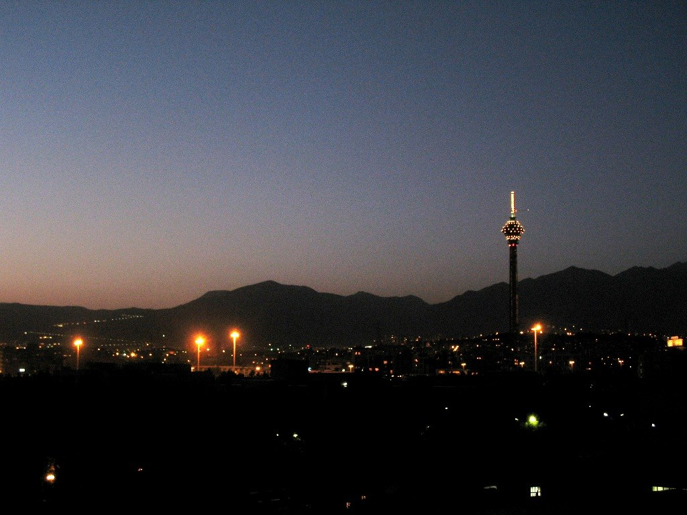

Иран передал условия прекращения войны с США через Катар; нефть выше $100
По словам секретаря ВСНБ Ирана Мохсена Резаи, Тегеран выдвинул три условия окончания войны: прекращение боёв на всех фронтах, разморозку средств и снятие морской блокады. Нефть превысила $100 за баррель 9 сентября.

В эксклюзивном интервью Al Jazeera (19–20 сентября 2026) секретарь Высшего совета национальной безопасности (ВСНБ) Ирана Мохсен Резаи заявил, что Иран официально передал Вашингтону через посредника Катар (при участии Пакистана) свои условия прекращения войны с США и возобновления переговоров. Иран сообщил, что ждёт ответа президента США Дональда Трампа.
Условия Ирана
Три основных условия по словам Резаи: прекращение войны на всех фронтах (включая Ливан), разморозка иранских средств и снятие морской блокады иранских портов. В материале Al Jazeera от 20 сентября приводятся дополнительные требования: прекращение ударов США по территории Ирана и вмешательства во внутренние дела.
Наши условия — прекращение войны на всех фронтах, разморозка наших замороженных средств и снятие морской блокады.
— Мохсен Резаи, секретарь Высшего совета национальной безопасности Ирана (Al Jazeera, Тегеран, 19 сентября 2026)
Как началась война
«Война с США» относится к конфликту, начавшемуся 28 февраля 2026 года, когда совместные удары США и Израиля поразили Иран. Перемирие при посредничестве Пакистана и 60-дневный меморандум, подписанный 17 июня, истекли в августе, после чего удары и посредничество возобновились. Это заявленная позиция Ирана, а не согласованная мирная рамка; подтверждённого согласия или официального ответа США на момент публикации нет.
Нефть выше $100
По данным NBC News, 9 сентября 2026 года Brent достигла $101,21 за баррель (+3,3%), а WTI — $96,05 (+3,2%), максимум с мая. Обе цены выросли примерно на 70% с начала года и на ~40% с начала войны 28 февраля. Розничный бензин в США в среднем $4,22, дизель — рекордные $5,94 за галлон.
Фактор Ормуза
Обычно около пятой части мировых поставок нефти проходит через Ормузский пролив, движение по которому нарушено. Аналитики предупреждают, что Brent может достичь $120–150, если противостояние продолжится. Для Узбекистана и Центральной Азии высокие мировые цены на нефть могут отразиться на стоимости топлива и продовольствия.
Баланс
Условия исходят от одного высокопоставленного иранского чиновника (Резаи) в одном интервью и повторены агентством Reuters/BOE. Цели США в войне, по данным источников, состояли в ограничении ядерных, ракетных и военных возможностей Ирана. Обе позиции представлены нейтрально; данные о жертвах приблизительны («тысячи»).
В цифрах
- Brent (9 сен 2026): $101,21 (+3,3%) — NBC News
- WTI: $96,05 (+3,2%) — NBC News
- Бензин в США: $4,22/галлон; дизель: $5,94/галлон (рекорд)
- Нефть с начала года: ~+70%; с начала войны: ~+40%
- Война началась: 28 февраля 2026
- Меморандум о перемирии: 17 июня (истёк в августе)
- Мировая нефть через Ормуз: ~1/5
- Возможная цена при продолжении: Brent $120–150